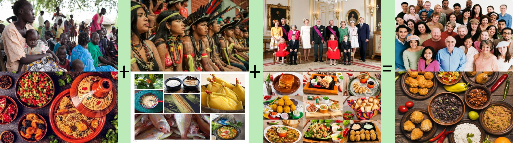

A gastronomia brasileira se originou da miscigenação de culturas e povos. Os indígenas cultivavam alimentos essenciais para muitos pratos da culinária brasileira, já os portugueses trouxeram alimentos típicos da Europa, até mesmo gado, os escravos vindos da África adaptavam os alimentos que lhes eram dispostos ao sabor e semelhança de pratos de seu agrado e país de origem. Gradualmente a gastronomia brasileira foi ganhando suas próprias receitas.
Iguarias que acreditamos serem típicas brasileiras geralmente são releituras de receitas europeias, indígenas e africanas. Nossa gastronomia é rica em sabores, temperos, ingredientes e possui uma deliciosa variedade de pratos. A história da culinária brasileira nos apresenta cada elemento prestigiado que compõe nossos pratos típicos.
Um dos símbolos da gastronomia brasileira é a feijoada, admirada por muitos brasileiros e um ícone da culinária, a receita não possui sua origem no Brasil. Referência à miscigenação gastronômica, a feijoada tem no seu sabor a história da culinária brasileira.

Outras contribuições a nossa gastronomia :
A gastronomia brasileira se renova diariamente, recentemente houve uma onda de influência da culinária árabe, e oriental, que estão fortemente incorporadas aos costumes e gosto dos brasileiros.
Dos árabes, temos a paixão por kibes e esfihas, dos orientais, temos o sushi, que, sem dúvida, é o prato oriental mais apreciado em nosso país.
Assim, nossa gastronomia é como nossa cultura, miscigenada, uma mistura de gostos e sabores do mundo todo, que formam algo único, assim como nós.